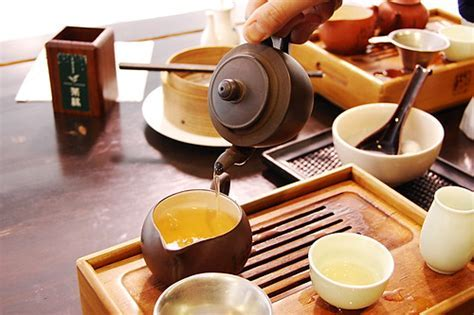
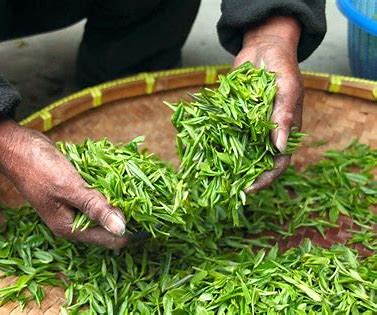
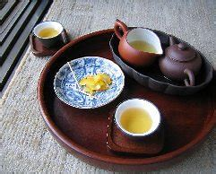

Tea-Drinking in China
Historical Origin
Tea-drinking has a long and rich history in China, stretching back thousands of years. Legend says that tea was first discovered by Emperor Shennong around 2737 BC. While boiling water under a tea tree, a leaf fell into his pot, and he noticed the pleasant aroma and taste of the resulting brew. From that point, tea-drinking gradually gained popularity.
In ancient times, tea was initially used for medicinal purposes, valued for its perceived health benefits. Over time, it evolved into a daily beverage and an integral part of social and cultural life. During the Tang Dynasty, tea culture reached new heights. Tea-drinking spread to other Asian countries, such as Japan and Korea, through trade and cultural exchange. Later, in the 17th century, tea was introduced to Europe, becoming a global phenomenon.
Appreciative Value
Sensory Delight
Taste: Tea offers a diverse spectrum of flavors. Green tea presents a fresh, grassy, and sometimes slightly sweet taste. Black tea is often rich, robust, and may have hints of malt or fruit. Oolong tea blends the characteristics of both, with a complex flavor profile that can be floral, sweet, and subtly roasted. Each type of tea provides a unique taste experience that can be savored and appreciated.
Aroma: The aroma of tea is captivating. Jasmine tea boasts a fragrant, floral scent that fills the air as soon as hot water is poured over the leaves. Pu-erh tea has an earthy, aged aroma. The smell of tea not only enhances the drinking experience but also has a relaxing effect.
Appearance: The visual aspect of brewed tea is also aesthetically pleasing. The clear, golden liquid of a well-brewed yellow tea or the deep, ruby-red color of black tea in a glass cup is visually appealing. The way tea leaves unfurl in the water, like the long, slender leaves of white tea slowly expanding, can be fascinating to watch.
Cultural Significance
Tea-drinking is deeply ingrained in Chinese culture. It's a symbol of hospitality. Offering a cup of tea to guests is a common and polite gesture. Traditional Chinese tea ceremonies involve specific rituals and procedures, such as the careful preparation of the tea, the manner in which it's served, and the order in which people drink it. These ceremonies reflect values like respect, harmony, and simplicity. Tea is also closely associated with literature, art, and philosophy. Many Chinese poets and painters have found inspiration in tea, and it's frequently mentioned in their works as a source of tranquility and creativity.
Health Benefits
Tea is known for its numerous health benefits. Green tea, for example, is rich in antioxidants called catechins, which are believed to help prevent cell damage, reduce the risk of certain diseases like cancer and heart disease, and boost the immune system. Black tea contains compounds that may improve digestion and promote relaxation. Herbal teas, such as chamomile or mint tea, are often used for their calming effects and to soothe the stomach.
Where to Experience in Shanghai and Chengdu
In Shanghai
- Yu Garden Teahouse: Located within the beautiful Yu Garden, this teahouse offers a traditional and serene setting. You can choose from a wide variety of teas, including local Shanghai-style green teas and famous teas from other regions. The staff are knowledgeable and can introduce you to different teas and the proper way to brew them. As you sip your tea, you can enjoy views of the classic Chinese garden, with its pavilions, rockeries, and ponds. It's an excellent place to experience the elegance of Chinese tea culture.
- Tianzifang Teahouses: Tianzifang is a trendy area in Shanghai, known for its narrow alleys, art galleries, and unique shops. Several teahouses here blend modern and traditional elements. You can find rare and specialty teas, and some teahouses even offer tea-tasting sessions. The atmosphere in Tianzifang, with its creative and bohemian vibe, adds a unique flavor to the tea-drinking experience. You can also meet local artists and expats while enjoying your tea.
In Chengdu
- People's Park Teahouses: The People's Park in Chengdu is famous for its teahouses, where you can observe locals playing mahjong, chatting, and relaxing over a cup of tea. The teahouses offer a laid-back and authentic experience. You can choose from Sichuan-style teas like jasmine tea, which is very popular in the region. The staff often pour boiling water from long-spouted kettles with skillful and entertaining flair. It's a great place to immerse yourself in local culture and observe the relaxed pace of life in Chengdu.
- Wuhou Temple Teahouse: Located near the Wuhou Temple, this teahouse provides a cultural experience. While you enjoy your tea, you can learn about the history of the Three Kingdoms period, which is closely associated with the temple. The teahouse offers a selection of traditional Sichuan teas, and sometimes features performances of Sichuan opera or storytelling sessions. It combines the enjoyment of tea with the exploration of local history and culture.